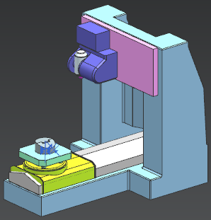
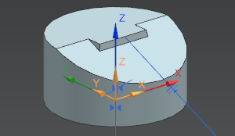

Open the part and replace the machine tool
-
Open mnf16_85_cylinder_setup_1.

-
If the Open message box appears, click OK.
NX loads the parts automatically when the Manufacturing application starts.
-
On the Resource bar, click the Machine Tool Navigator
 tab.
tab.
Notice that the kinematic model is called SIM07_5AX_MILL.
-
In the Machine Tool view of the Operation Navigator, double-click the 5-AX_MILL_VERTICAL_B-HEAD_C-TABLE node.
-
In the Example, 5-Ax Mill Vertical B-Head C-Table dialog box, click Retrieve Machine from Library .
-
In the Library class Selection dialog box, select the Mill node, and click OK.
-
In the Search Result dialog box, in the Matching Items group, in the libref column, double-click sim07_mill_5ax_sinumerik_mm.

The machine tool is removed from the assembly and the Part Mounting dialog box is displayed.